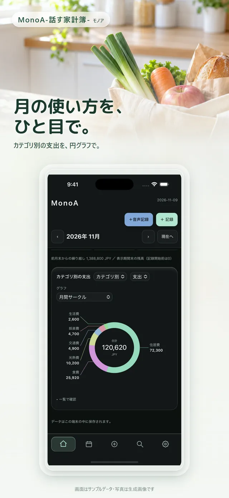
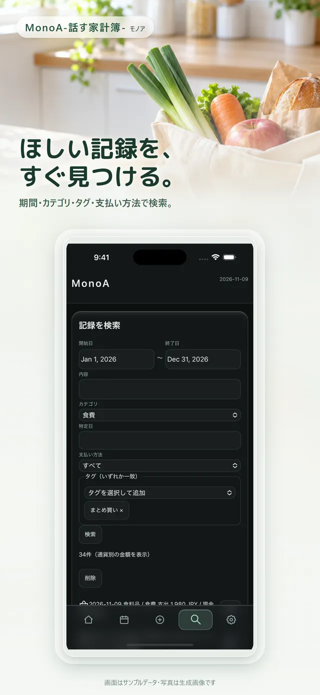
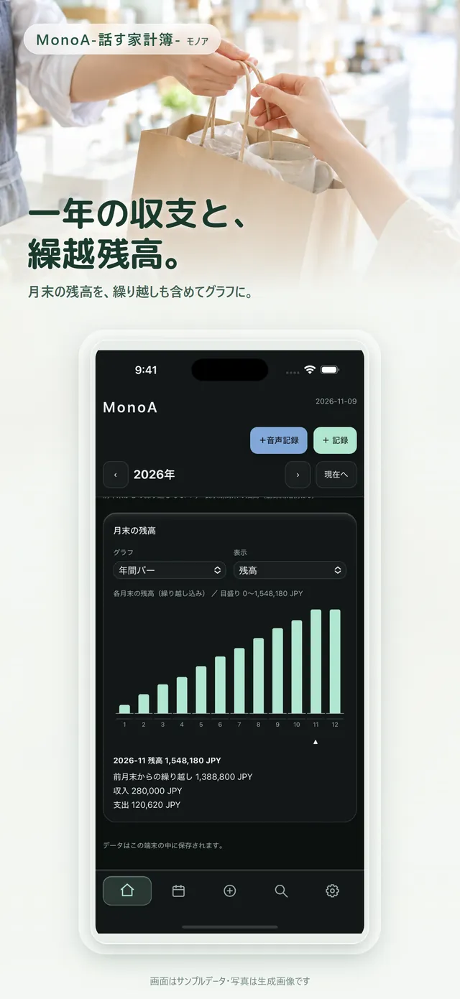
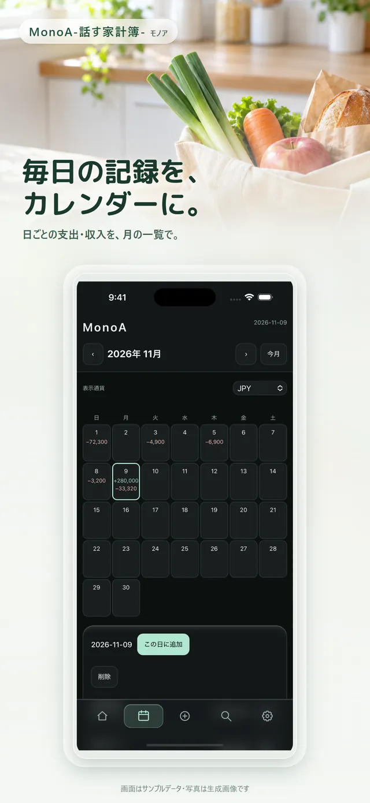
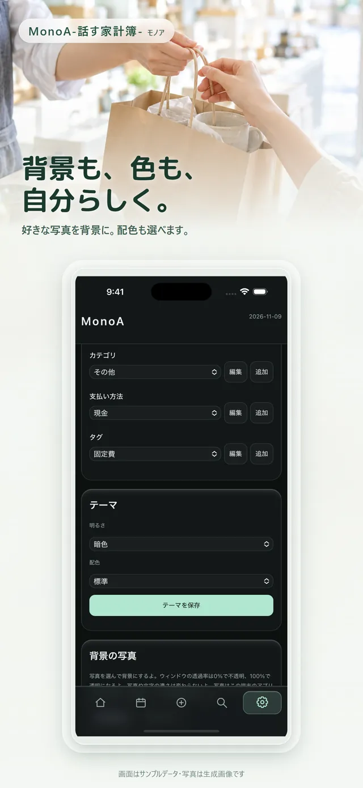

MonoA-話す家計簿-
買った後に、スマホへひとこと。
話す入力と手入力で収支を記録し、カレンダー・グラフ・検索で振り返る家計簿アプリです。

Features特徴
できること
声で記録
マイクを押して話すと、日付・金額・内容を分けて入力欄へ。保存前に確認・修正できます。
ホーム画面から
ウィジェットから音声入力やクイック入力をすぐに開けます。
月の使い方を円グラフで
カテゴリ別の支出を円グラフで表示。月ごとの収支もひと目で分かります。
一年の流れと繰越残高
12か月の収支と、前月からの繰越を含めた残高をグラフで確認できます。
カレンダーと検索
日ごとの記録をカレンダーで一覧。期間・カテゴリ・タグ・支払い方法で探せます。
自分らしい見た目
背景写真やテーマ、配色を選べます。
How to使い方
3ステップで使い方
-
ステップ1：話す
買い物のあと、アプリやホーム画面のウィジェットからマイクを押して、「スーパーで2,800円」のように話します。

-
ステップ2：確かめて保存
日付・金額・内容が入力欄に入ります。必要なら直して保存します。
-
ステップ3：振り返る
円グラフやカレンダーで、月の使い方を確認します。

Screens実際の画面
実際の画面
画面は App Store 掲載用の画像です。サンプルデータを使い、背景写真は生成画像です。
音声入力の画面。話した内容を確認してから保存します。 ホーム画面のウィジェット。音声入力とクイック入力を開けます。 
期間・カテゴリ・タグ・支払い方法で記録を検索する画面。 月のカテゴリ別支出を円グラフで表示する画面。 
一年の収支と繰越残高を棒グラフで表示する画面。 
日ごとの支出・収入をカレンダーで一覧する画面。 
テーマ・配色・背景写真を選ぶ設定画面。
Movie紹介動画
紹介動画（約30秒）
音声つきの縦長動画です。自動では再生されません。再生ボタンを押してご覧ください。
動画の内容
- 忘れてしまう前に、スマホにひとこと
- 話してすぐ登録（音声入力から保存までの操作）
- カテゴリ別で出費がわかりやすい（月のカテゴリ別グラフ）
- MonoA -話す家計簿- iPhone版 App Storeで公開中
人物の映像はイメージです。アプリの画面は架空のデータで操作しています。
Availability配布状況
配布状況
2026年11月13日時点の情報です。
- iPhone（App Store）
- 公開中
- Android
- テスト配布中（一般公開前のため、ここではインストール先を案内していません）
- 料金
- App Store の掲載ページでご確認ください